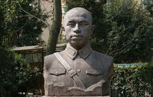
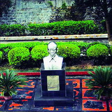
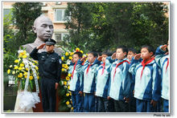
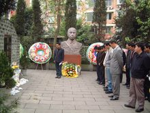

抗战名将--李家钰

早年经历
1892年阴历三月二十九日出生在大兴乡一户殷实农民的家庭。父亲李如松，有水田两亩，带打蓝靛为业，娶妻妾两人。李家钰为母妾熊氏所生，他幼年在本场李香山、黄辉五处读私塾，十三岁考入蒲江高等小学堂。为改换门庭，他决心投笔从戎，考入四川陆军小学堂并在该校第四期肄业。 1913年春，他和许多进步同学一起反对依附北洋军阀的四川都督胡景伊，被迫离开学校。同年夏天，他进入南京陆军军官预备学校，在“二次革命”中，李家钰去南京参加了柏文蔚将校团讨袁，反对帝制；赴上海参加攻打制造局之役中，作战奋勇崭露头角。 1914年，李家钰返回四川，插班入四川陆军军官学堂第三期继续学习，他聪慧好学，勤勉刻苦，颇得老师的赞赏。 1915年，李家钰在四川陆军军官学校第三期毕业后，被分配到川军第四师刘存厚部邓锡侯部服役，李家钰作战勇敢，赏罚分明，每战多身先士卒，颇得部下的爱戴。
川军诸侯
1915年，袁世凯复辟帝制，李家钰随刘存厚部邓锡侯部参加护国军方面作战。以后，在与北洋军阀曹锟、张敬尧等作战中，英勇善战，功绩卓著，递次以战功擢升为营长，以后又升任川军第三师邓锡侯部第十二团团长、旅长。 1924年，担任四川陆军第一师师长、四川边防军总司令等职。 1925年，杨森发动“统一之战”，李家钰跟随邓锡侯参与刘湘等倒杨。他先后攻下荣昌、内江、仁寿等县，并进占成都烟酒总局和造币厂，制造不合格之半圆银币及当二百之铜铺币强行流通，从中搜括民财。同年，在四川军阀争夺防区中，李家钰很快发展到6个混成旅（18个步兵团），占有遂宁、安岳、乐至、潼南等县。李家钰在其防区内自委官吏，摊派捐税，估提盐价。制造枪弹，培训官佐，拥兵自重，称“遂宁王”。 [2] 在邓锡侯属下已经形成尾大不掉之势。 1927年，原四川边防军总司令赖心辉被刘文辉等人合谋扣留，被迫通电下野，邓锡侯为了笼络李家钰，便把四川边防军总司令职务要来给他，李家钰时年三十五岁。 他和罗泽洲成为以四川陆军军官学堂的同学关系为中心的“军官系”正副首领。和刘文辉、邓锡侯、田颂尧的四川保定系、刘湘、杨森的四川速成系，还有刘存厚的武备系齐名。但在下川东之战和上川东之战中，这个弱小的集团遭到刘湘和刘文辉的联合打击，损兵折将，李家钰不得不向老长官邓锡侯求助，才避免了全军覆灭的下场。 1930年11月，第二十八军罗泽洲师内部哗变，罗泽洲被扣，因罗狂妄自大，邓锡侯有去罗之心，即升陈鸿文为师长，到顺庆接管该师。 1931年2月，罗泽洲逃到李家钰部，李、罗联合杨森，向顺庆进攻，企图以武力强迫陈鸿文交出该师，挑起了北道之战。结果，陈鸿文败退成都。 3月，邓锡侯率兵进攻李、罗，刘文辉、田颂尧亦派兵助战。李家钰兵败，求刘湘援助，于是，刘湘出兵援李。 5月间，在顺庆城周围，全川大小军阀队伍云集，形成互相对峙和牵制的局面，被迫罢战言和。 北道之战，李家钰退据营山、蓬安两县，实际已依附刘湘，军官系从此衰落。邓锡侯失去所属两部队及其防地，势力大弱。 1932—1933年，因刘湘、刘文辉互相倾轧，矛盾激化而发生的“二刘之战”，李家钰率部下一万余人进攻刘文辉防区。在刘文辉的千里岷江防线被突破后，李家钰部乘势追进，将刘文辉部师长陈光藻、旅长石肇武俘获。石肇武系土匪出身，被刘文辉招安后收为干儿子，驻防成都时无恶不作，李家钰将石肇武处死，首级运到成都，在少城公园示众三天，大快人心。
围剿红军
1933年，中国工农红军第四方面军进入川北，建立了川陕革命根据地。 10月，刘湘任命李家钰为四川剿匪第三路总指挥，李家钰伙同罗泽洲部组成三万多人的兵力进攻川陕苏区。 1934年1月，李家钰、罗泽洲部进抵仪陇，先后在城郊五里墩、鼎山一带，遭红九军二十七师重创，被歼八百余人。同年7月，李家钰协同杨森、潘文华部在飞机掩护下，轮番进攻通江县北红军阵地，被红军全歼其一个营，李家钰部渡梁永河溃逃。 13日，红三十军在巴中以东的右垭口大破李家钰军，歼其四个团后收复巴中，把围剿的川军逐出了苏区。 1934年底，李家钰督饬所部两团及工兵两连人力，修成蒲江至新津全长四十五公里的简易公路，即现今蒲江至成都公路蒲新段原路基。同时，李家钰还委派邛、蒲公路局长钱文轩，鸠工修筑蒲、邛公路，完成蒲江北门至西崃板桥铺路基二十余公里。 1935年2月，红四方面军集结12个主力团北上陕南，李家钰、罗泽洲趁机北上抢地盘，但不久红军再次南下，罗泽洲首当其冲，被歼灭5000余人，从此一厥不振，他害怕遭到红军的打击，随命令部队死守阵地，稳扎稳打。红四方面军放弃根据地，强渡嘉陵江以后到达茂县土门。李家钰奉令转移灌县堵截。所部在进至汶川、威州道上的板桥沟，被红九军突破防线，李家钰部营长耿伯萍跳泯江淹死，全营覆灭。旋红九军又在理番岭岗山奇袭并重创李家钰部第二混成旅第四团，团长龚彬战败只身脱逃。战后，李家钰受蒋介石严斥，李家钰为泄怒将龚彬枪决。 10月，蒋中正缩编川军，任李为陆军整编104师师长兼四川第一绥靖区司令官，令其远戍西昌。 11月13日，红军进逼名山、雅安，李家钰受命率四个旅兵力至百丈一线同红军接火，李家钰部又伤亡、被俘八百余人。 1936年2月，红军胜利完成反堵截、追尾任务，挥师北上。川军各部追堵失败，李家钰只得率部就防西昌。事后川军再次整编，李家钰任四十七军军长，辖104师和178师。
山西抗战
1937年“七七”卢沟桥事变爆发，日军大举入侵，国势垂危。同日，李家钰被晋升为陆军第47军军长，所部扩编为两个师（第104、178师） 李家钰出自民族义愤，通电请缨杀敌。并作诗一首：：“男儿仗剑出四川，不灭倭寇誓不还；埋骨何须桑梓地，人间到处是青山。”蒋介石同年8月令李家钰等部川军出川抗战。李家钰接电令于9月初率四十七军（原有第104师，后再扩编出第178师）从西昌出发，部队单衣草鞋，行程4000余公里，12月始抵达晋东南抗日前线，布防于太行山区之长治、长子、黎城、潞城一带。李家钰在抗日前线，深受全民团结救亡高潮和共产党抗日统一战线政策的感召和鼓舞，对过去积极从事内战的罪愆有所悔悟，幡然致力于国共合作，杀敌致果。 1938年春，李家钰在国共合组的“第二战区东路军”总、副指挥朱德、彭德怀统一指挥下，率部在东阳关、长治一带同装备精良的日军入侵部队下原熊弥的108师团104旅团（一万多人兵力）激战两役。长治保卫战中，李家钰军104师312旅624团据城死守两昼夜，在日军飞机、大炮轮番轰击下，北门陷落，官兵奋勇对敌展开肉搏巷战，毙伤敌寇一千余人。此役李家钰部营长杨岳岷、连长杨显谟、夏抚涛、陈绍虞、黄高翼等壮烈殉国，副团长杜长松负重伤。东阳关之战，营长周策勋殉国（以上伤亡者除杨岳岷、夏抚涛两人外，皆蒲江县人）。李家钰部对日军初战虽挫敌凶焰，然官兵伤亡亦逾千人。后黎城县政府在东阳关建“川军抗日死难纪念碑”，以抚慰忠魂。同年3至5月，李家钰奉命率四十七军，在八路军和抗日游击队配合下，连续猛攻并收复了被日军侵占的晋南平陆、芮城、安邑等县城及原八路军据点多处，战绩卓著。 1939年冬，李家钰积功升任三十六集团军总司令，统辖陈铁的十四军、高桂滋的十七军、四十七等三个军七个师兵力。 1940年春，李家钰得悉八路军朱德总司令由武乡赴洛阳开会途经其驻地时，曾派兵一个连前往迎接并设宴款待。当晚，朱德就团结御侮，抗日及民主等问题，同李家钰促膝磋谈至深夜，当时，第一次反共高潮刚刚过去，朱德举杯问道：“其相兄，他日你若奉命与我军兵戎相见，你当如何”。李举杯道：“我当效晋文公退避三舍，再战”两人相视而笑。次晨，朱德一行跨越晋（城）博（爱）公路日军封锁线时，李家钰为安全计，增派一个加强连，掩护朱德顺利过境。 1940年4月，李家钰指挥47军及三支抗日游击队，在晋城以南天井关一线，予进犯日、伪军以重大杀伤，毙伤敌一千多人。所部104师曾一度克复陵川县城。
壮烈殉国
中原大战……我将士英勇，李家钰将军在此役中杀敌殉国，是应受到全国尊敬的。……我们哀悼李家钰将军抗战殉国，希望前线将士都抱为国牺牲的决心！……